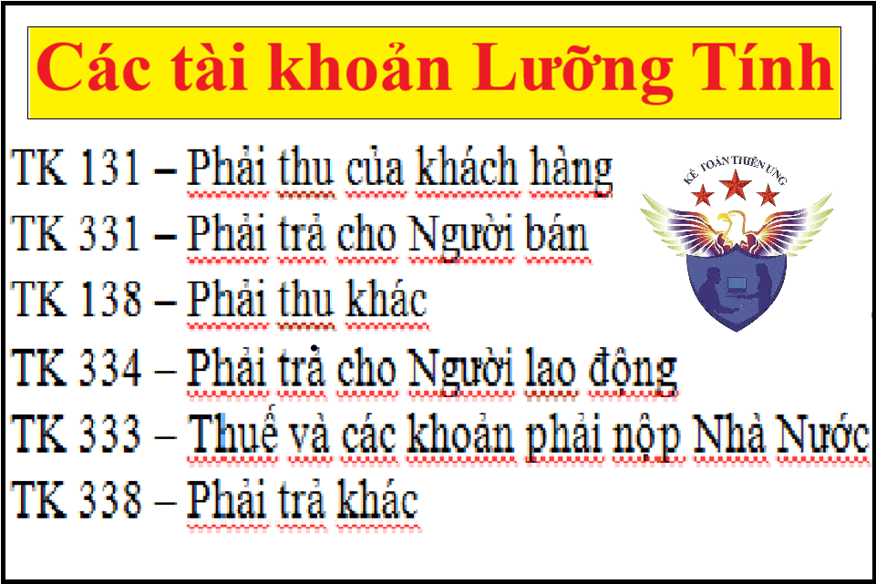

Tài khoản kế toán lưỡng tính là gì? Kế toán Diệu Tâm xin tổng hợp tất cả các tài khoản lưỡng tính trong kế toán doanh nghiệp và hướng dẫn cách hạch toán các tài khoản kế toán lưỡng tính đó.
- Tài khoản kế toán lưỡng tính là những tài khoản có thể có số dư cuối kỳ bên nợ mà cũng có thể có số dư cuối kỳ bên có. Trong khi các tài khoản khác chỉ được dư nợ hoặc dư có hoặc không có số dư cuối kỳ.

I. Các tài khoản kế toán lưỡng tính gồm:
Tài khoản đầu 1:
TK 131: Phải thu của khách hàng
TK 138: Phải thu khác
Tài khoản đầu 3:
TK 331: Phải trả cho Người bán
TK 333: Thuế và các khoản phải nộp Nhà Nước
TK 334: Phải trả cho Người lao động
TK 338: Phải trả khác
Tài khoản đầu 4:
Tài khoản 421: Lợi nhuận sau thuế chưa phân phối. Có thể có số dư Nợ hoặc số dư Có. (Đây là 1 Tài khoản đặc biệt)
Số dư bên Nợ: Số lỗ hoạt động kinh doanh chưa xử lý.
Số dư bên Có: Số lợi nhuận sau thuế chưa phân phối hoặc chưa sử dụng.
1. Những loại TK tài sản (Tài khoản đầu 1) chỉ có số dư bên Nợ nhưng tài khoản (131, 138) lại có số dư bên Có khi:
- Khách hành trả thừa và đặt trước tiền mua hàng (TK 131)
- Số tiền thu thừa của đối tượng đang chờ xử lý (TK 138)
2. Những tài khoản Nguồn vốn (TK đầu 3) thường chỉ có số dư bên Có nhưng những TK như (331, 333, 334, 338) lại có số dư bên Nợ khi:
- Đặt trước tiền hàng cho nhà cung cấp (TK 331)
- Trả tiền thừa tiền cho nhà cung cấp (TK 331)
- Trả nhầm lương cho nhân viên A sang nhân viên B qua tài khoản ngân hàng nhưng tổng sổ tiền không thay đổi (TK 334)
- Thừa thuế (TK 333)
- Kiểm kê phát hiện thừa hàng hóa (TK 338).
II. Cách định khoản hạch toán các tài khoản lưỡng tính
VÍ DỤ 1:
- Công ty TNHH Tư vấn & Đào tạo Diệu Tâm bán Máy tính cho Công ty Bảo An: Doanh thu = 15.000.000đ, thuế GTGT 8% = 1.200.000đ. Công ty Bảo An chưa trả tiền.
Nợ TK 131: 16.200.000
Có TK 511: 15.000.000
Có TK 3331: 1.200.000
Tiếp ví dụ trên:
- Ngày 10/8/2026 Công ty TNHH Tư vấn & Đào tạo Diệu Tâm bán Máy tính cho Công ty Bảo An: Doanh thu = 15.000.000đ, thuế GTGT 8% = 1.200.000đ.
- Ngày 09/8/2026 Công ty Bảo An đặt trước tiền mua hàng cho Công ty Diệu Tâm bằng Tiền mặt số tiền 6.000.000đ.
Nợ TK 111 : 6.000.000
Có TK 131: 6.000.000
VÍ DỤ 2:
- Ngày 30/9/2026 Công ty Diệu Tâm khi kiểm kê phát hiện thiếu hàng hóa trị giá 10.000.000đ
Nợ TK 138 : 10.000.000
Có TK 156 : 10.000.000
- Công ty phạt và trừ vào lương của thủ kho về số tiền bị thiếu hàng hóa là 10.000.000đ
Nợ TK 334 : 10.000.000đ
Có TK 138 : 10.000.000đ
Chúc các bạn học tốt!
Trên đây là tổng hợp đầy đủ các tài khoản lưỡng tính trong kế toán doanh nghiệp, để hiểu rõ hơn và hạch toán tốt các bạn có thể xem thêm:
Bài tập định khoản nguyên lý kế toán
-------------------------------------------------